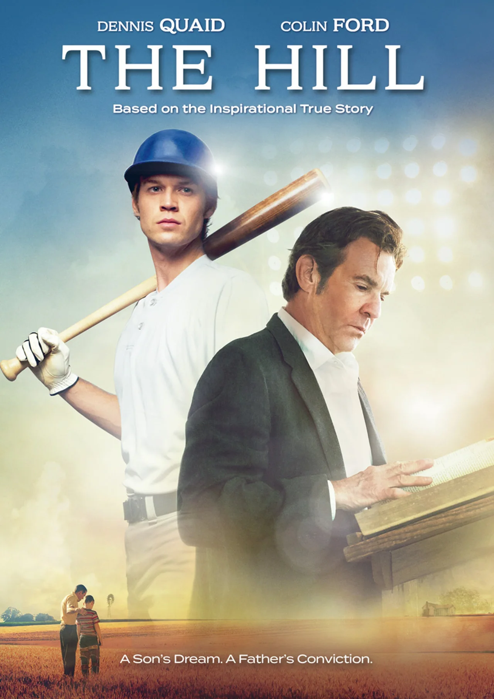
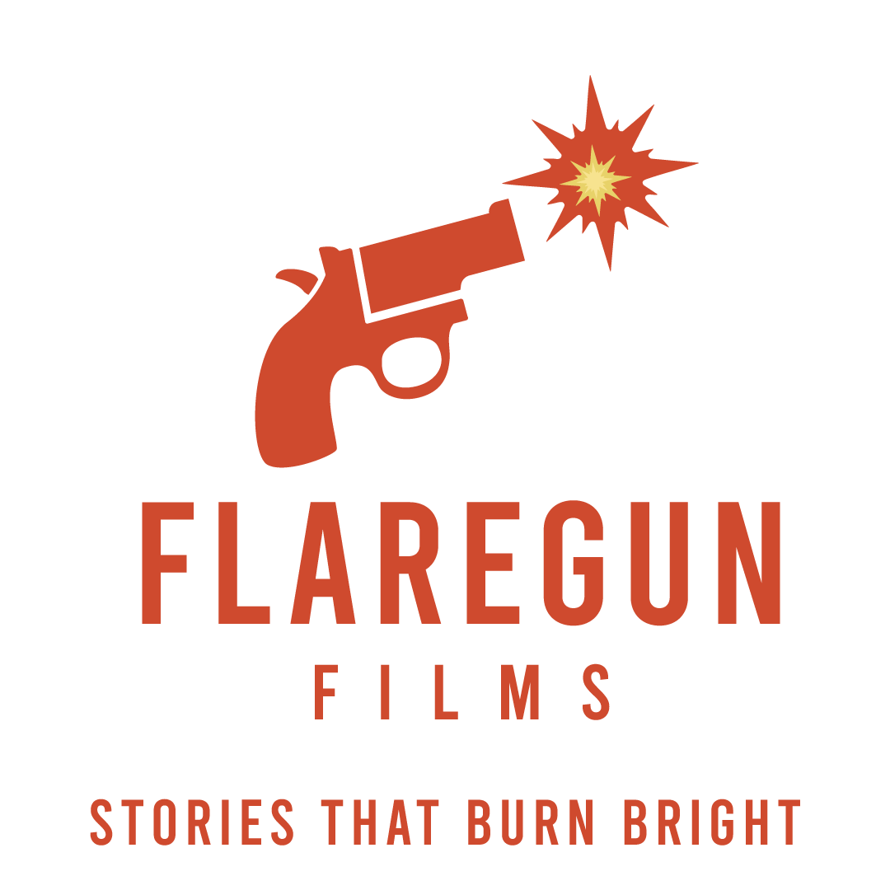
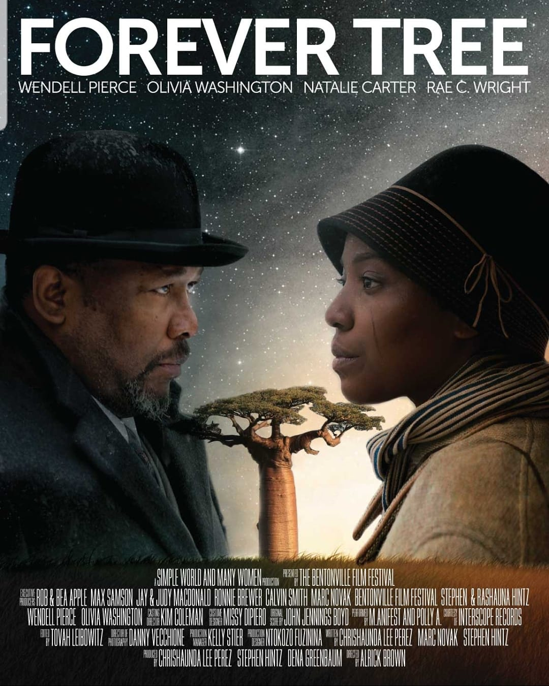
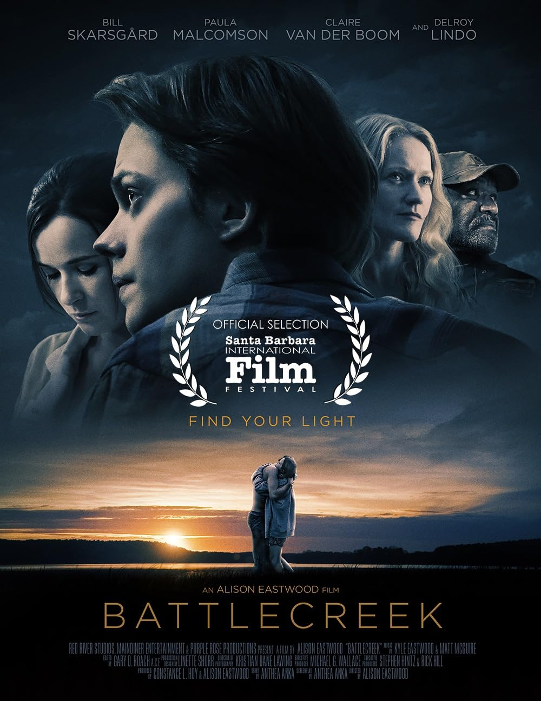
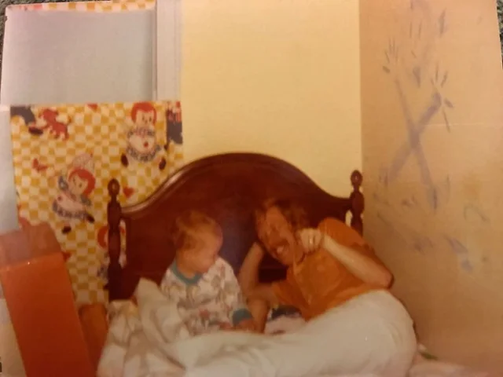

The Hill (2023)
Screenplaydir. Jeff Celentano • Briarcliff Entertainment • with Dennis Quaid

Independent film & television
True stories. Literary adaptations. Original voices.
Film and television from writer-producer Stephen Hintz.
From the co-writer of The Hill

Selected Work

Screenplaydir. Jeff Celentano • Briarcliff Entertainment • with Dennis Quaid

Executive Producerdir. Alison Eastwood • with Bill Skarsgård and Delroy Lindo
Co-writerdir. Alrick Brown • Bentonville Film Festival
In Development
Six projects exploring overlooked histories, complicated families, and lives that resist easy explanation.
True Crime Feature
A stolen Stradivarius turns one man’s fantasy of escape into a tightening criminal trap.
View Project →Historical Family Feature
A lost WWII pilot. A discovery in Italy. A father and son facing everything they still need to say.
View Project →Feature Film, Television Series & Publishing
Two friends uncover a mystery linking hidden history, family legacy, and the unexplained.
View Project →Biographical Sports Feature
Nolan Richardson battles prejudice and tragedy to revolutionize basketball and reach its summit.
View Project →Dramatic Feature
An heir abandons privilege in search of enlightenment and discovers freedom through surrender.
View Project →Animated Feature Adaptation
A dropout steals an artist’s identity and stumbles into an unexpected chance at redemption.
View Project →Screenplays, decks, and package details available to industry on request.
About

Flare Gun Films is an independent production company founded by Stephen Hintz, co-writer of The Hill and executive producer of Battlecreek.
Before he wrote screenplays, Stephen ran a social service agency in Milwaukee, working with kids and families. His work is still driven by a fascination with character, family, and people from every walk of life—especially those with something unexpected to say.
The company develops film and television projects from true stories, literary material, and original work, and carries them from first draft to financing.
Flare Gun Films finds cinematic potential in overlooked histories, complicated families, and lives that resist easy explanation.
A flare only burns for a few seconds. Long enough to see where you are.
Selected Credits →Stories with a life beyond the screen
Flare Gun Films works with producers, financiers, representatives, talent, sales agents, distributors, and press.